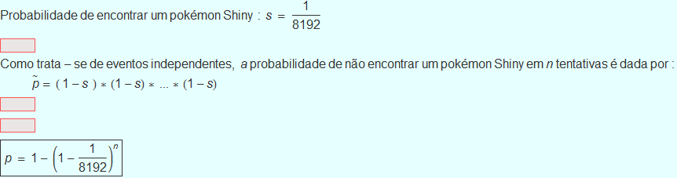
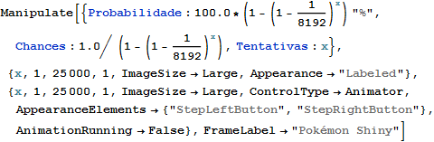
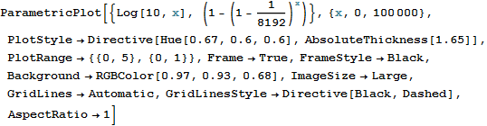
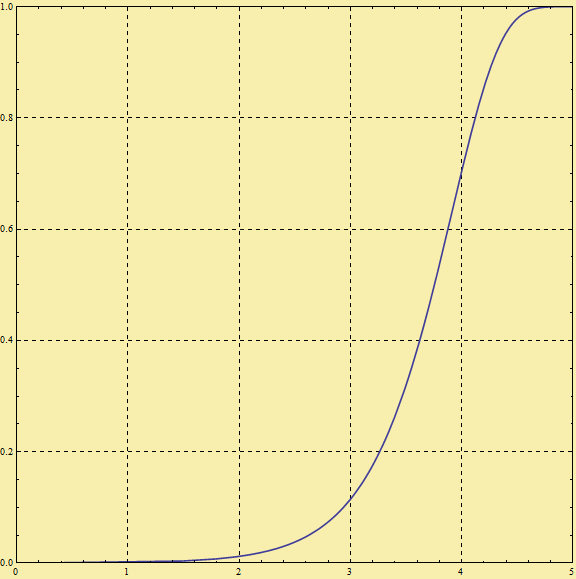

Pokémons Shiny
Uma análise probabilística
A análise
A probabilidade de se encontrar um pokémon Shiny é de 1 para 8192.
Porém, a cada nova tentativa, a probabilidade de encontrar um pokémon shiny deve ser maior, segundo a equação:

A probabilidade

O gráfico
Assim foi confeccionado o gráfico da probabilidade de se encontrar um pokémon Shiny segundo o número de batalhas

